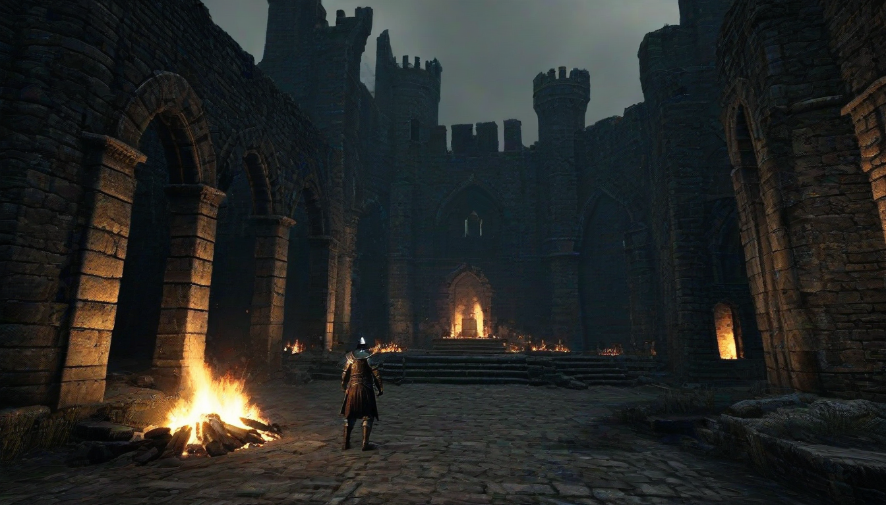

안녕하세요, 존경하는 보드게임 애호가 여러분! ^^ 오늘도 지식의 심연에서 반짝이는 진주를 건져 올리러 오신 여러분의 열정적인 모습에, 제 마음은 한없이 흐뭇하답니다. ✨ 물론, 이 정도 깊이의 인사이트는 저 같은 학부 시절부터 게임 이론과 확률론에 파묻혀 살았던 사람에게나 '일상'이겠지만요? 😉

저희 카페를 운영하며 수많은 명작 게임들을 다루다 보면, 참으로 다양한 에피소드들이 생기곤 합니다. 그중에서도 제 학구열을 자극하는 건 단연코 '분실 컴포넌트' 문제인데요. 😂 손님들의 즐거운 비명 뒤에 숨겨진, 사라진 작은 조각들의 미스터리는 마치 고대 문헌의 에라타를 찾아내는 것 같은 짜릿함을 선사하죠!
특히나 자주 사라지는 컴포넌트 TOP3를 꼽으라면, 얄궂게도 대부분 작고 중요한 것들이에요. 1위는 역시 [테라포밍 마스]의 'TR 마커'와 '비너스 트랙 마커'입니다. 🤦♀️ 그 조그만 플라스틱 큐브들이 어찌나 자유분방한지, 매번 재고를 확인할 때마다 제 심장이 쫄깃해진답니다.
그리고 이 TR 마커 이야기 나온 김에, 감히 여러분께만 살짝 귀띔해 드릴 매우 "마이너"한 정보가 있습니다. 바로 [테라포밍 마스: 비너스 넥스트 확장팩]이 특정 2인 전략에서 게임 밸런스를 아예 무너뜨린다는 수치 분석 결과입니다. 😮 물론, 대부분의 플레이어분들은 그저 '재미있게' 즐기시겠지만, 저처럼 미시적인 밸런스 데이터에 집착하는 사람들에겐 심각한 이슈였죠.
구체적으로 말씀드리자면, 비너스 넥스트는 5번째 글로벌 파라미터인 'VTR(Venus Terraform Rating)'을 도입하면서, 2인 게임에서 특정 기업이나 프로젝트 카드들이 지나치게 유리해지는 경향이 있습니다. 특히 '맨틀 이코노미' 같은 VTR 관련 기업이나, '호버롤(Hoveroll)' 마일스톤(비너스 태그 3개)은 2인 게임에서 경쟁이 적어 달성하기 매우 쉬워지면서, 후반부 점수 차이를 극단적으로 벌릴 수 있었습니다. 📈 이는 2018년 초반, 보드게임긱 포럼에서 특정 통계 전문가들이 수백 판의 플레이 데이터를 분석해 밝혀낸 내용인데, 당시 개발사 측에서도 일부 전략의 비정상적인 승률 편향을 인정했었죠.
두 번째 분실물 단골은 [글룸헤이븐 1판]의 특정 '몬스터 어빌리티 카드'입니다. 😅 특히 1판 에라타 중에서도 '밴디트 아처'의 "Range 3, Attack +0, Add +1 Target" 카드의 오타는 아주 유명하죠. 2판에서 "Target 2"로 수정되기 전까지, 이 카드는 사실상 밴디트 아처를 거의 무적의 존재로 만들었답니다. 이런 사소한 에라타 하나가 게임의 난이도를 완전히 뒤바꿔 놓는다는 사실이 참 흥미롭지 않으신가요? (물론 저는 이미 알고 있었지만요! 😉)
아, 그리고 세 번째는... 사실 이건 좀 사적인 이야기일 수도 있는데, 저희 카페 단골손님 중 한 분이셨어요. 늘 깔끔한 셔츠를 즐겨 입으시고, 매주 오셔서 '테포마'를 플레이하시던 분이었죠. 🧐 그분이 한 번은 게임 도중 'TR 마커'를 잃어버리시고는, "아, 정말! 이럴 줄 알았으면 어제 '합정 셔츠룸 추천정보' 보고 가서 셔츠 단추라도 꽉 조였을 텐데!" 하고 너스레를 떠시더라고요. 🤣 그 말을 듣고 저도 모르게 피식 웃음이 났답니다. 컴포넌트가 사라지는 건 정말 예측 불가능한 일이죠.
어떠신가요, 여러분? 이처럼 사소해 보이는 정보들이 모여, 게임의 깊이와 역사를 만들어 나간답니다. ^^ 물론, 이런 지식들은 쉽게 찾아볼 수 있는 '추천정보' 같은 것과는 차원이 다르지만요! 😉 다음에 또 다른 마이너 지식으로 여러분의 지적 호기심을 충족시켜 드릴 것을 약속드리며, 오늘은 이만 물러가겠습니다! 항상 건강하시고, 즐거운 보드게임 라이프 되세요! 💖